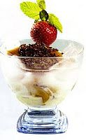

Es puding

Bahan :
- 6 mangkuk pudding rasa stroberi, siap beli
- 1 liter ice cream WALL’S 2 in 1 Chocolate & Vanila Choco Chips
Hiasan :
- Susu kental manis cokelat, whipping cream, wafer dan mesyes coklat.
Cara membuat :
- Siapkan mangkuk, tata pudding, tambahkan ice cream WALL’S 2 in 1 chocolate & vanilla choco chips secukupnya.
- Hias dengan susu kental manis cokelat, whipping cream, wafer dan meyses coklat.
- Sajikan segera.